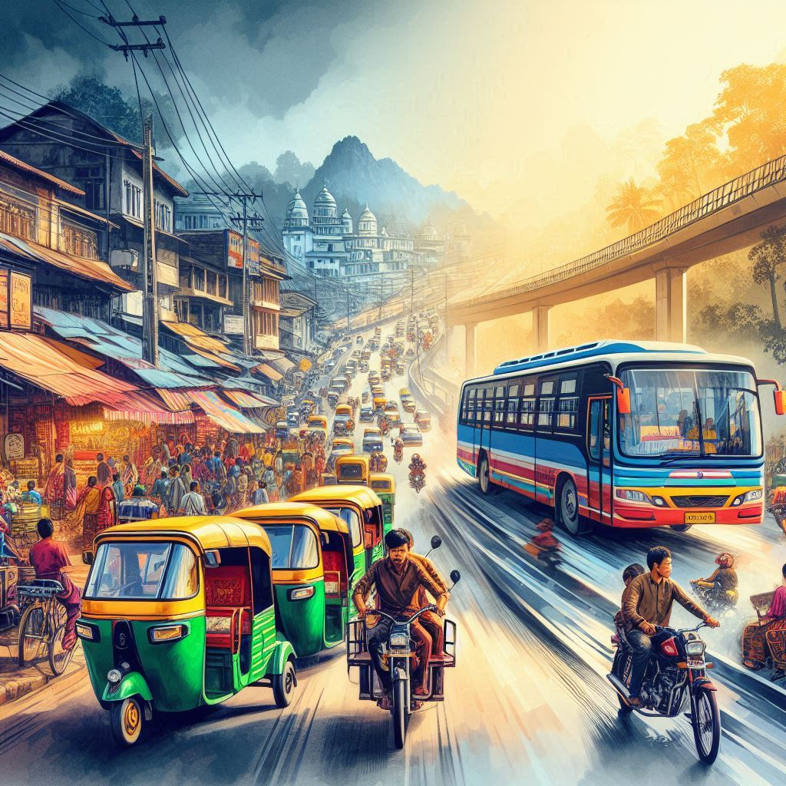

Transportation in Manipur plays a vital role in connecting the region’s people, culture, and economy, given its geographical location and diverse landscapes. The transportation infrastructure, though evolving, faces challenges due to the hilly terrain, rivers, and remoteness of certain areas. Here's an overview of the primary modes of transport in Manipur:
1. Road Transport
Roadways are the most commonly used form of transportation in Manipur, especially for travel within the state and to neighboring regions. The road network, though improving, is still undergoing development to cater to the growing needs of the population.
The National Highways connect Manipur with other parts of India. The National Highway 2 (NH-2) is the main road link connecting the state with Nagaland, Assam, and Kolkata, while the National Highway 37 provides access to Assam.
Private vehicles such as cars, motorcycles, and taxis are widely used, particularly in Imphal (the state capital). Auto-rickshaws and local buses are common for short-distance travel within towns and cities.
2. Rail Transport
Railways play an important role in connecting Manipur with the rest of India. The state has a limited rail network, with the Dimapur-Imphal railway line being one of the main routes.
The Jiribam railway station, located about 225 kilometers from Imphal, is a significant railway hub connecting Manipur to Assam and the rest of India. This network is being expanded to enhance connectivity further.
3. Air Transport
Imphal International Airport (also known as Bir Tikendrajit International Airport) serves as the main gateway to Manipur. It offers regular flights connecting Imphal to Kolkata, Delhi, and other major cities in India.
Air travel is important for connecting Manipur with other states and is especially useful for business, tourism, and government-related activities.

4. Water Transport
Waterways are not extensively used in Manipur due to its mountainous terrain, but there are some instances where boats and ferries are used for transportation on the state’s rivers, particularly in the Loktak Lake region. Loktak Lake is known for its floating islands and is an important tourist attraction.
5. Public Transport
Public buses operate within Imphal and connect various towns and villages within the state. The Manipur Transport Corporation (MTC) runs state-operated buses, and private operators also provide services.
In addition to buses, private taxis and shared jeeps are common for inter-city and inter-village transport.
6. Challenges and Future Development
The state faces geographical challenges like hilly terrain and seasonal floods, which often affect the roadways and rail infrastructure. Additionally, roads in some areas are still under construction or need upgrading to accommodate modern traffic needs.
Plans for improving infrastructure are underway, with projects to enhance road connectivity and expand the railway network to further integrate Manipur with the rest of India.
Electric vehicles (EVs) and eco-friendly transportation methods are being promoted to reduce pollution and improve sustainability.
Conclusion:
Transportation in Manipur is evolving with various infrastructure projects underway to enhance connectivity within the state and with other parts of India. Despite the challenges posed by its rugged terrain, the state's transportation network is steadily improving, offering more accessible travel options for locals and tourists alike.